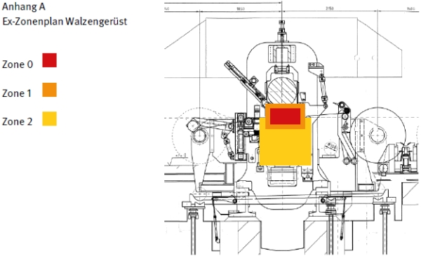

| Explosionsschutz – Dokumentation nach BetrSichV § 6 | |
| Datum: Verantwortlich: Unterschrift: |
|
| 1 Allgemeine Angaben | |
| Firmenname: | |
| Arbeitsbereich: Kaltwalzen von Aluminium | |
| Bezeichnung der Anlage: Walzgerüst 1 | |
| 2 Zugehörige Dokumente | |
| Gefahrstoffverzeichnis Gefährdungsbeurteilung Sicherheitsdatenblätter Lageplan |
Ex-Zonenplan (Anhang A) Prüfbescheinigungen Betriebsanweisung Nachweis der Unterweisung |
| 3 Einsatzstoffe und sicherheitstechnische Kennzahlen | |
| Petroleum Siedepunkt: 150 – 290 °C Dampfdruck: < 3,1 mbar Flammpunkt: 65 – 85 °C Zündtemperatur: ca. 210 °C Temperaturklasse T3 UEG: 0,7 Vol-% OEG: 5 Vol-% |
|
| 4 Beurteilung der Explosionsgefahr | |
| Gefährliche explosionsfähige Atmosphäre (g.e.A.) kann auftreten: Normalbetrieb: Im Nahbereich des Walzenspaltes wird durch Eindüsen von Petroleum eine g.e.A. durch das Aerosol/Dampf/Luft-Gemisch erzeugt (Vol. = ca. 300 Liter). Durch starke Konvektion in diesem Bereich, eine Objektabsaugung oberhalb des Walzengerüstes und dem niedrigen Dampfdruck des Petroleums kommt es zur starken Verdünnung in den angrenzenden Bereichen. Die maximale Temperatur am Walzenspalt beträgt ca. 150 °C, somit beträgt der Abstand zur Zündtemperatur ca. 60 °C (80 % der Zündtemp.= 168 °C). Andere Zündquellen in diesem Bereich sind u.a. das Rollenlager. Technische Störung: Durch Folienabriss (Materialstau) oder Lagerüberhitzung können sich im Bereich des Walzenspaltes wirksame Zündquellen bilden. Da das Petroleum auch bei einer Störung weiter in diesen Bereich eindüst, kann es zur Zündung der g.e.A. kommen. Durch die mit Petroleum benetzten Oberflächen ist eine schnelle Brandausbreitung gegeben. |
|
| 5 Maßnahmen | |
| 5.1 Technische Maßnahmen | Das Walzengerüst wird mit 50 000 m3/h abgesaugt. Die Lüftungsleistung wird durch Strömungswächter kontrolliert. Der Walzprozess schaltet bei Störung der Lüftung ab. Die Walzenlager werden alle 8 h ausgewechselt, hierdurch wird eine Überhitzung durch mechanische Belastung weitestgehend vermieden. Über Temperatur- und optische Sensoren im Walzenbereich wird eine automatische zweistufige CO2-Feuerlöschanlage (6 und 12 kg) ausgelöst. |
| 5.2 Zoneneinteilung | Zone 0: Im Nahbereich der Eindüsung und der Walzen (40 cm auf der gesamten Rollenbreite) Zone 1: weitere 10 cm um die Zone 0 Zone 2: ca. 50 cm um die Zone 1 unterhalb der Walzen (ungelüftete Bereiche) Siehe Ex-Zonenplan (Anhang A) |
| 5.3 Betriebsmittel in Zone 2 | Auswahlkriterium: Elektrische Betriebsmittel mit potentiell eigenen Zündquellen sind im Bereich der Zonen nicht vorhanden Nichtelektrische Betriebsmittel mit potentiell eigenen Zündquellen im Normalbetrieb sind nicht vorhanden. Nichtelektrische Betriebsmittel ohne potentiell eigene Zündquelle: Rollenlager (Temperatur) Rollenoberfläche Materialstau am Walzenspalt (Störung) |
| 5.4 Konstruktiver Explosionsschutz | --- |
| 5.5 Organisation | Alarmplan Betriebsanweisung Unterweisung wird jährlich durchgeführt Prüfungen:
|
| 5.6 Kennzeichnung nach Arbeitsstättenverordnung | |
